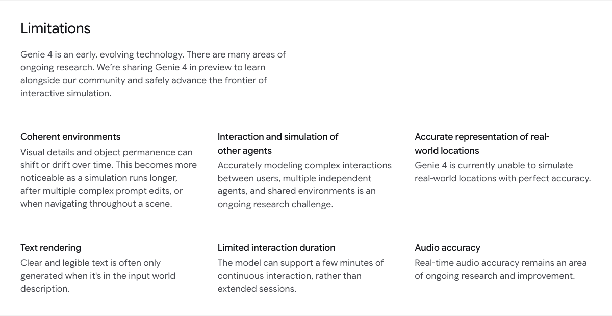

湖面上飘着一块平台，上面长着野草和蕨类植物，一棵小树向旁边伸展。一名穿着宽松棕色西装的男人站在平台上，吹着萨克斯。
镜头没有固定在演奏者身上。它可以离开平台，掠过水面，再回头看向那个人。远处是树林和薄雾，平台上一个发光的球体把暖色映在水面上。
打开声音，还能听到风、水和萨克斯的演奏。
这是 Google DeepMind 给新模型 Genie 4 展示的一段场景。它看起来像一段影像，但创作者面对的并不只是一条已经剪好的视频。按照 Google 的介绍，用户可以在场景运行时移动镜头，也可以输入文字，调整天气、增加人物或物体，再看世界如何继续变化。
10月27日，Google DeepMind 发布了这个实时交互世界模型。它的名字是 Genie 4，不是 Gemini 4。Gemini 会在幕后参与理解、规划和引导，而 Genie 的任务，是让一个可以探索、会随输入变化的世界出现在眼前。
这次更新里，声音也成了世界的一部分：环境声、音乐，乃至人物之间的对话，都可以与场景一起生成。
如果过去使用生成式 AI 创作的常见方式是“写提示词，等待结果，再决定要不要重来”，Genie 4 展示了另一种方向：先把场景放出来，让它动起来，然后一边观察，一边继续导演。
从几个场景，认识 Genie 4
Google 在发布页面放了不少演示。它们的共同点是：生成的不是一张固定的图，而是一个会随着镜头和输入继续变化的场景。
比如南极热气球。提示词把视角放在吊篮里，近处能看到吊篮边缘、支撑杆和绳索，远处是冰川、山峰和其他热气球。对创作者来说，这些细节的意义不只是让画面看起来漂亮，也让“我在哪里、往哪里看”有了一个明确的起点。
另一个案例更夸张：第一人称骑着一条黑龙，穿过山地赛道。提示词写明镜头就是骑手的眼睛，不要切换成第三人称；画面里可以看到龙的脖颈、其他骑手和远处的城堡，声音则包括翅膀拍动、高处的风和远方的轰鸣。
还有一段1980年代日本乡间车站的场景。红色列车停在近处，乘客站在站台上，有人走动，有人等待。提示词要求画面有密集人群、自然光和纪录片质感，同时交代了列车的位置、远处的山和潮湿的夏日气氛。
这个案例的看点不是某一个人的面部有多逼真，而是场景中有很多东西需要同时存在：人物、列车、站台和环境要共同构成一个看起来合理的时刻。人一多，人物之间的动作、位置和连续性，也就更容易暴露问题。
Google 还展示了雪地里的鹤、草地上随风起伏的粉色绸缎，以及西瓜、枫树种子等与物体运动有关的场景。它们把镜头对准不同问题：材料如何移动，物体如何碰撞，人物如何在环境里行动。
按照 DeepMind 的说明，这些视频来自实时交互录屏，操作者使用键盘和鼠标控制导航与镜头，通过文字提示引导场景。不过，发布页面也注明视频片段经过缩短，用于展示效果。它们能帮助我们理解产品想做什么，还不能单凭几段画面判断普通用户每次操作都能得到什么结果。
所谓“世界模型”，在这里可以先不用理解成一个复杂术语。你可以把它看作一套持续生成场景变化的系统：给它一个环境，让它呈现眼前的画面；当人移动视角或者提出新要求时，它继续生成接下来发生的内容。
它和看一段普通视频的体验区别在于，你不是只能等画面播放到结尾。Google 希望你能走进这个场景，影响它往哪里发展。
从生成一个结果，到实时导演一场戏
过去几年，AI 图像和视频工具已经把“描述一个画面”变成了很多人的日常操作。但在一个场景里，创作者真正要决定的事情往往比一句描述多得多。
以湖上的演奏者为例。场景需要什么样的天气？镜头先靠近人物，还是先展示湖面？演奏者在画面中央，还是只出现在远处？声音应该是完整配乐，还是只保留现场的风、水和乐器？
如果这些决定只能在生成前一次性写完，创作者就要先在脑海中预测所有选择的效果。看到结果后，如果镜头不合适，又需要重新组织提示词，再等待新一轮结果。
Genie 4 所展示的交互，是**先给世界一个起点，再把部分决定留到场景运行时。**Google 说，用户可以通过自然语言调整天气、移动镜头、添加人或物体；系统会结合周围场景来处理这些指令。用户不输入时，Gemini 也会参与观察和引导，让场景继续发展。
这就有点像给创作者多了一个“现场”。你可以先看空间是什么样，再决定镜头该往哪边走；看到光线和人物的关系后，再试另一种天气。一个想法不必先写成完整脚本，也可以从一处环境、一种气氛开始。
这里的“导演”是对交互方式的比喻。它并不意味着 Genie 4 已经具备电影制作软件里所有精确控制能力。Google 展示的是自然语言与实时探索带来的新可能；一段场景能否严格按照创作者意图反复执行，还要看具体任务和后续产品能力。
官方提示词也说明，现实中的创作并不是输入“给我一个湖”就结束了。萨克斯场景的描述细到平台上的植物、发光球体、镜头与人物的关系、画面颗粒感和声音来源。它要求保持纪录片式质感，还特别说明不要加入场景中不存在的背景音乐。
这些约束很有意思。它们说明，提示词仍然是创作的一部分，但创作者想要控制的对象正在变多：不仅是主体和风格，还有摄影机、空间、动作，以及你希望在现场听到什么。
让世界有声音，也让人物有反应
对一个可探索的场景来说，声音会改变人对它的感受。
湖面上有没有风，萨克斯声是从平台传来还是像一段后期配乐，都会影响这个世界给人的距离感。骑龙的场景里，翅膀和风声也在帮助观众感受速度和运动。
Google 称 Genie 4 是其首个原生生成音频的实时世界模型。它可以随场景生成环境声和音乐，还引入了互动对话：人物可以根据用户输入或世界里发生的事件，实时作出回应。
这让一个场景可以多出另一层变化。创作者不仅在调一张图，也在尝试：一个人站在这里时会说什么？另一个角色加入之后，场景的气氛怎么变？声音和画面能否共同表达某种情绪？
对影视创作者来说，先听见声音，也许有助于判断一个场景的节奏。对于交互体验，人物如果能根据发生的事情回应，就有机会成为体验的一部分，而不只是画面背景。
但“能生成声音”和“声音完全准确、可精确控制”之间还有距离。DeepMind 自己也把实时音频准确性列为仍在研究和改进的问题。想要用它做正式作品，还需要知道声音是否稳定、对白能否按要求修改，以及输出能否顺利进入后续制作流程。
人物也是如此。Google 展示了演奏者的呼吸、手指和身体动作，也展示了车站里等待和移动的人群。越是贴近日常的动作，越容易让观众注意到细微的不自然：一个人刚刚站过的位置是否保持一致，人物与物体接触时是否合理，镜头转回来后人还在不在。
换句话说，让人物出现是一回事，让他们在持续变化的世界里始终保持可信，是更长的一道题。
这个“实时导演”可以用在哪里？
Google 邀请了一批来自创意、新闻、教育、游戏和工程领域的可信测试者，探索 Genie 4 可能进入哪些工作流程。DeepMind 把目前的反馈归纳为几个方向。
最容易想象的是影视预演。
一场戏拍摄前，导演和团队可能需要讨论镜头从哪里进入、人物站在哪里、光线要什么感觉。过去可以用文字、分镜、照片、场景搭建或其他预演工具，把这些想法逐步讲清楚。
Genie 4 提供的可能性是：先建立一个粗略场景，让团队直接进入其中，试着移动镜头、调整天气和动作。某个视角不合适，就换一个；如果一场对话的氛围太平，也可以尝试改变环境。
这种用途最重要的可能不是生成一条可以直接上映的视频，而是更快回答创作早期的问题：这个想法大概长什么样？镜头能不能成立？不同方向值得先试哪一个？
TechCrunch 报道中，DeepMind 工程师 Diego Rivas 也提到，实时交互对构思和故事板阶段有价值，因为它有助于保持创作时的思路连贯。团队同时承认，最终完整产品体验目前还没有定型。
游戏和互动体验也是一个方向。做一款游戏，需要设计场景、交互、规则、角色和后续制作流程。Genie 4 当前展示的能力，并不等于自动完成这些工作；但对于创意前期，测试者正在尝试先用自然语言形成可探索的概念，看看视觉风格、材料和互动想法是否有潜力。
比如团队想讨论一种由彩色玻璃构成的世界。官方演示中的提示词要求河流、花朵、树木、山和天空都保持玻璃或水晶的视觉风格，还要求镜头能在其中移动。这样的场景可以让人更快讨论：这个美术方向给人的感觉是什么，第一视角是否有趣，哪些东西还需要重新设计。
新闻、教育和历史场景则带来另一种可能。DeepMind 称，部分摄影记者正在探索以档案照片为起点，生成可探索的环境；也有团队测试用动态场景呈现洪水或山火等短期事件。
但这里有一个很关键的边界：一张历史照片记录了照片范围内的某个时刻，模型延伸出来的街道、人物动作和声音，并不因此自动成为史实。Google 也明确说，Genie 4 目前不能完美准确地模拟真实地点。
如果未来有人把它用于历史或新闻表达，哪些部分来自已知材料、哪些部分是模型补出来的，就需要清楚标示。让读者感觉自己“到了现场”，和证明现场确实如此，是两种不同的工作。
在这些用途之间，还有一个共同的产品问题：创作者究竟想控制到什么程度？
构思阶段，宽松的控制有时反而能带来惊喜。你只需要给一个大方向，让模型补出一些自己没想到的光线、构图或环境细节。看到结果之后，再决定哪些值得保留，哪些需要改掉。对一个还没有成形的想法来说，这种探索本身就有价值。
但项目推进到下一步，要求会变得具体。导演可能希望人物走到某个位置时才转身；游戏团队可能需要同一场景在不同视角下保持相同的道路和建筑；制作团队也许需要把人物、背景和声音交给不同的人分别处理。此时，大家关心的不再只是“生成了一个不错的结果”，还包括能不能只修改其中一部分，能不能让其他部分保持稳定。
这也是实时交互工具将来需要面对的取舍。自然语言适合表达气氛和意图，但一句“让场景更紧张”，每个人理解的具体变化可能不同。如果用户希望保留现有构图，只调整人物的动作和脚步声，工具就需要让这种范围足够清楚。最终采用什么样的界面和控制方式，目前还不能从演示中直接下结论。
官方展示的复杂提示词给了我们一个线索：越明确地描述镜头、主体和声音，越容易把创作意图传达给模型。可如果每次都要写出一大段精细指令，新手能否轻松上手、专业用户能否快速重复操作，也会影响这类产品的使用门槛。文字交互打开了入口，具体体验还取决于产品是否能让人方便地保留、修改和比较自己的选择。
再看档案照片的例子。对教育工作者来说，能围绕一张照片探索空间，可能让学生更愿意提出问题：画面之外是什么？人物可能从哪里走来？这类问题可以成为讨论的起点，但生成的答案需要回到照片、文献和其他材料中核对。创意用途允许探索多种可能，涉及历史事实时，材料和想象的边界就必须呈现出来。
对使用者而言，实时还意味着可以更快发现问题。画面出现之后，创作者不必只评价最后一帧，还可以观察镜头移动时哪些关系变了、哪一段声音不合适、人物动作是否破坏了原本想要的氛围。这些观察能够直接影响下一条指令，也让一次生成变成连续的选择过程。
但连续修改也可能带来成本：模型需要处理新的指令，用户需要判断结果，而场景本身也可能逐渐偏离最初的设定。怎样回到某个较满意的状态、比较不同版本，或者保留已确定的部分，都会影响创作者能否把试验变成可重复的工作。Google 尚未完整说明这些工作流，等产品开放后，可以把它们作为实际体验的重点。
能试出想法，还不等于能稳定交付
世界模型要真正进入工作流，除了能生成一个让人眼前一亮的场景，还得处理一个很现实的问题：当创作者继续操作时，这个世界能不能记住自己刚刚是什么样。
假设镜头从湖上的平台移开，再绕回来，平台上的树、演奏者和发光球体是否还在原来的位置？如果先加了一个人物，后来又改了天气，这个人物是否会持续存在？创作者改动得越多，系统需要维持的关系也越多。
DeepMind 承认，随着模拟持续、经过多次复杂提示词修改，或者用户在场景中不断移动，视觉细节和物体持续性可能发生变化或漂移。这直接影响创作者能否围绕同一个场景反复试验。
另一个问题是时间。Google 的模型页面表示，**Genie 4 目前支持几分钟的连续交互，而不是长时间运行。**TechCrunch 报道提到，场景一致性可达约两分钟。具体任务能维持多久、表现如何，仍需要看后续开放和实际测试。
复杂物理交互、多个角色与用户共享环境时的行为、空间准确性，以及场景中文字的可读性，也都在官方列出的限制之中。一个西瓜看起来被碰撞了，不代表系统已经能够在各种条件下准确模拟物理；一条虚构街道看起来像真的，也不代表它的空间关系和现实地点一致。

还有一些影响实际使用的问题目前没有完整答案：不同任务需要等待多久？画面分辨率和帧率如何？能否分别编辑角色、物体或声音？能导出什么格式？如果要接入其他制作软件，交付物是什么？
这些问题决定了它能在工作流里承担哪一段。做头脑风暴时，某个细节偶尔变化，也许还能接受；要把一个场景交给多人协作、反复修改并用于正式制作，要求就会高得多。
**目前 Genie 4 仍是面向可信测试者的研究预览。**Google 计划之后先向 Project Genie 中的 Google AI Ultra 订阅用户，以及 Gemini API 和 Google AI Studio 的早期合作伙伴开放。具体时间、地区和价格，还需要等进一步公布。
Google 还表示，Genie 4 生成的视频和音频将包含 SynthID 隐形数字水印，用于帮助识别 AI 生成内容。随着场景越来越接近真实影像，素材从哪里来、哪些内容经过生成，也会成为创作者和发布平台需要处理的问题。
如果让机器人先在这个世界里行动
在创作之外，Google 还展示了一个值得留意的实验：让人形机器人在模拟场景中下跳棋。
这个案例里，Gemini 4 Argon 先把任务拆成步骤，再把步骤以文字形式交给 Genie 4；Genie 4 随着这些提示生成模拟过程。画面中出现的是 Apptronik 的 Apollo 人形机器人。
这段演示呈现了 Google 所说的一个方向：语言模型提供任务规划，世界模型生成环境和变化。除了让人进入场景进行创作，未来也可以探索让 AI Agent 在模拟环境中尝试任务，观察行动之后会发生什么。
不过，**这里展示的是模拟，并不是现实中的 Apollo 已经凭借这套系统完成了同样的棋局。**要让模拟真正帮助机器人训练，还需要解决动作、物理与现实环境之间的差距，也需要验证模型生成的结果能否可靠地支持任务判断。
对 Genie 4 来说，这是一条更远的路；对本文讨论的创作场景来说，它也让同一套能力显出了另一面：世界不仅可以供人观看和调整，还可能成为其他 AI 系统行动的地方。
世界先动起来，创作者再走进去
回到湖上的演奏者。
传统创作里，一场戏往往需要先决定场地、人物、镜头、声音，再通过拍摄和后期逐步组合。生成式工具改变了其中一些环节，而 Genie 4 给出的想象是：先让一个场景出现，创作者走进去看一看，再决定下一步怎么调整。
这个过程仍然需要人提出想法、判断结果、选择方向。实时生成也没有消除创作中的取舍：镜头该看什么，声音该留下什么，人物的反应是否符合故事，仍然要由创作者决定。
Genie 4 当前的演示让这些决定有了新的尝试方式。接下来，当更多人能真正用上它，场景能否保持一致、修改能否足够准确，以及生成结果能否进入实际工作流程，会决定这个“实时导演”能走多远。